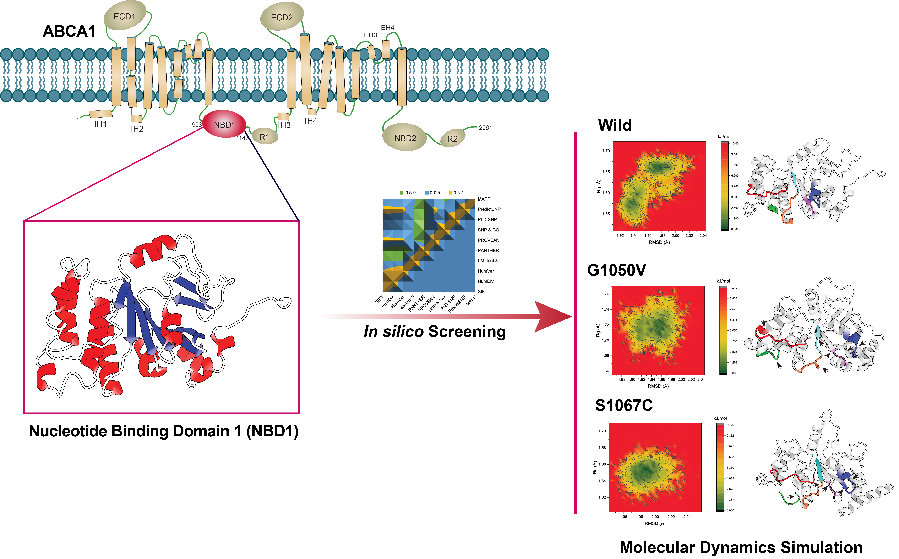

This study focuses on the identification and computational analysis of missense variants located within the Nucleotide-Binding Domain 1 (NBD1) of the human ATP-binding cassette transporter A1 (ABCA1). ABCA1 plays a crucial role in cholesterol efflux and high-density lipoprotein (HDL) metabolism. Mutations in the ABCA1 gene are associated with Tangier disease and familial hypoalphalipoproteinemia.
The research employed a multi-step computational approach:
Several missense variants were predicted to be deleterious by SIFT analysis. Molecular docking studies revealed altered binding affinities in variant structures compared to the wild-type protein. MD simulation results indicated significant conformational changes and reduced structural stability in certain variants, suggesting their potential pathogenic role in ABCA1-related disorders.
The computational analysis successfully identified high-risk missense variants in the NBD1 domain of ABCA1. These findings provide valuable insights for understanding the molecular mechanisms underlying ABCA1-related diseases and may guide future experimental validation and therapeutic strategies.